Exemples de compte-rendus
Nous avons eu accès aux 29 compte-rendus des conseils municipaux depuis 2012 jusqu'à juin 2016. Les compte-rendus sont rédigés par chaque conseiller à tour de rôle ; ainsi la présentation des informations est très disparate, ce qui rend l'extraction d'informations plus compliquée.
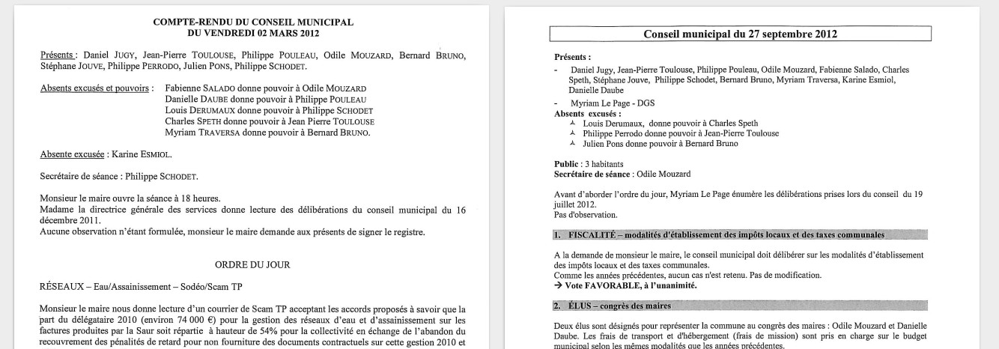
La présence au Conseil Municipal depuis 2012
La ligne jaune indique les élections municipales de Mars 2014.
Les présences et les absences sont empilées ; ainsi l'enveloppe haute du graphique montre la variation de l'effectif du conseil municipal.

La ligne jaune indique les élections municipales de Mars 2014.
Les présences et les absences sont ici superposées ; leur symétrie apparente vient du fait que l'effectif est à peu près constant.
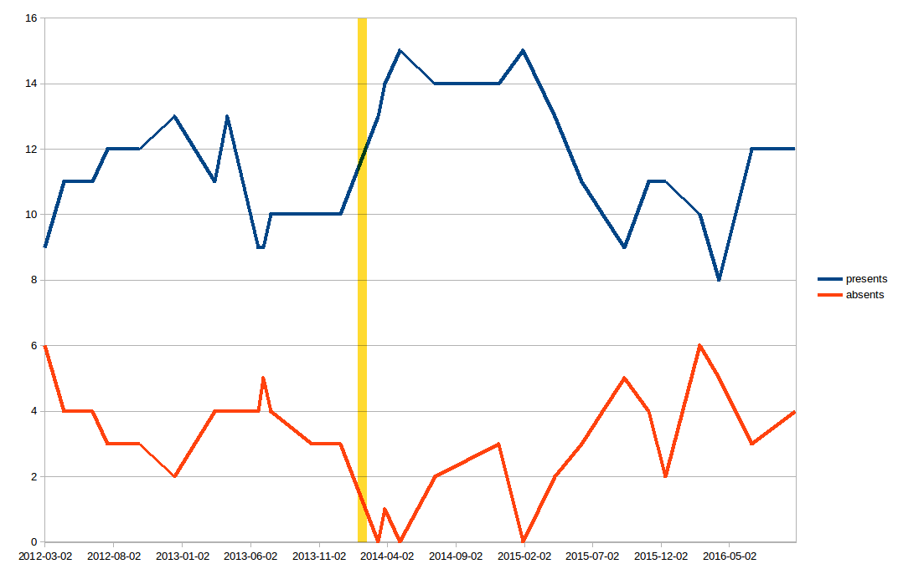
La présence des élus de 2014 à 2016
La taille des cercles est proportionnelle au nombre de conseils municipaux auquel chacun a participé.
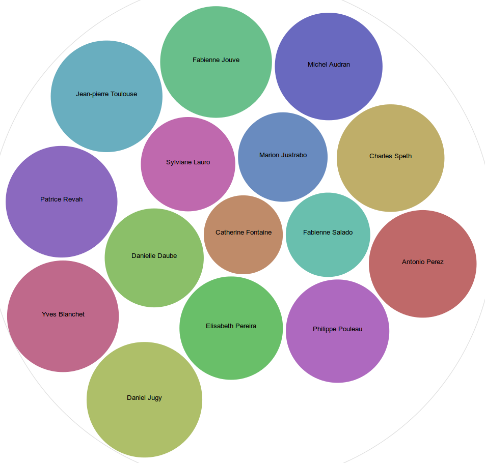
Les absences des élus de 2014 à 2016
La taille des cercles est proportionnelle au nombre de conseils municipaux auquel chacun a été absent.
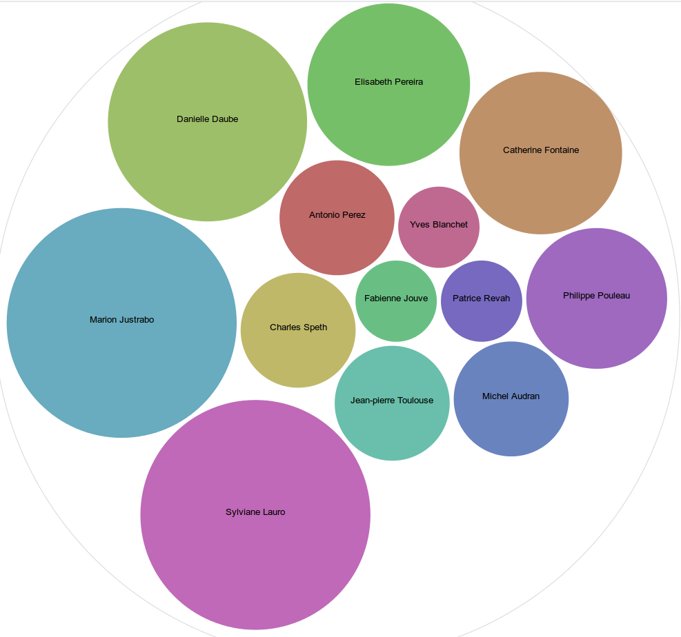
Comparaison absences–présences 2014 à 2016

La présence des élus de 2012 à 2014
La taille des cercles est proportionnelle au nombre de conseils municipaux auquel chacun a participé.

Les absences des élus de 2012 à 2014
La taille des cercles est proportionnelle au nombre de conseils municipaux auquel chacun a été absent.

Comparaison absences–présences 2012 à 2014

Présences et absences par sexe de 2012 à 2014
Les hommes sont en rouge et les femmes en bleu. Sur le graphique de gauche, les tailles de cercles sont proportionnelles aux présences ; sur la droite aux absences.
Le graphe de gauche montre que la parité est à peu près respectée avec un homme de plus. Celui de droite montre que ce sont les femmes qui ont le plus d'absences.
Le graphe de gauche montre que la parité est à peu près respectée avec un homme de plus. Celui de droite montre que ce sont les femmes qui ont le plus d'absences.


Présences et absences par sexe de 2014 à 2016
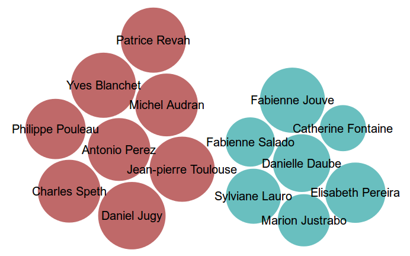
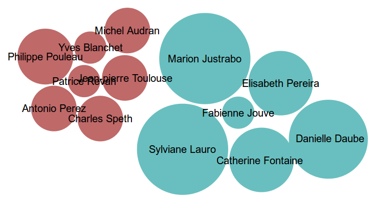
Pouvoirs donnés de 2012 à 2014
Ce graphe montre à qui les conseillers absents (à gauche) ont donné pouvoir (à droite). La taille des éléments à gauche correspond aux absences qui ont été relevées plus haut ; celle des éléments de droite montre les conseillers recevant pouvoir le plus fréquemment.

Pouvoirs donnés de 2014 à 2016
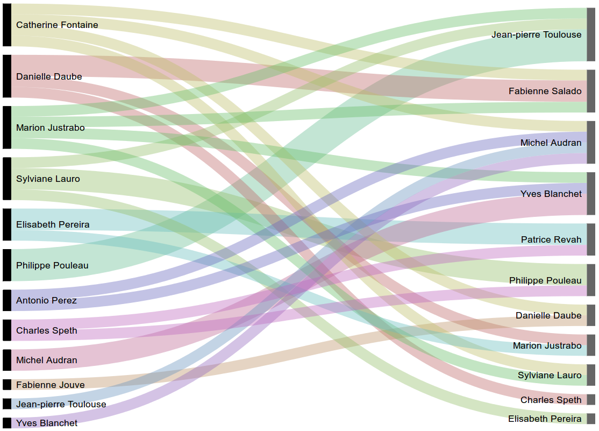
Relations entre les conseillers de 2012 à 2014
Ce graphe montre les relations entre conseillers par l'intermédiaire des pouvoirs qu'ils se donnent. Deux conseillers sont reliés s'ils se sont au moins donné une fois pouvoir l'un à l'autre. Par ailleurs, les conseillers qui se sont donnés pouvoir plusieurs fois sont plus proches.
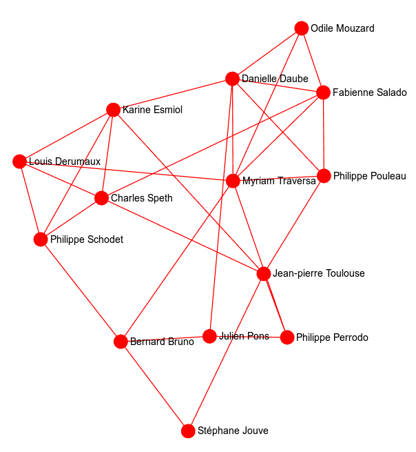
Relations entre les conseillers de 2014 à 2016
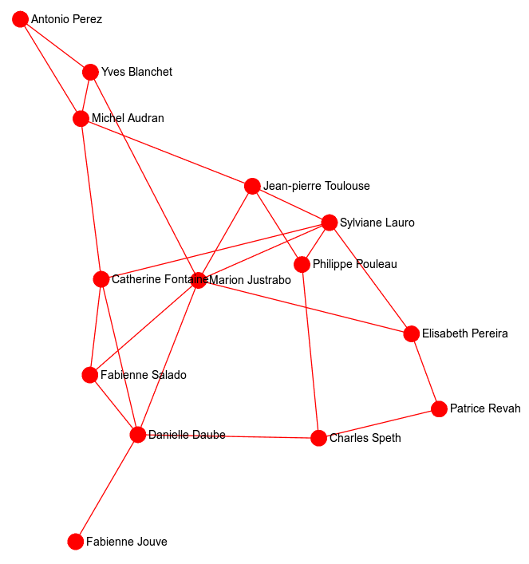
Les dépenses à l'initiative du Maire depuis 2012
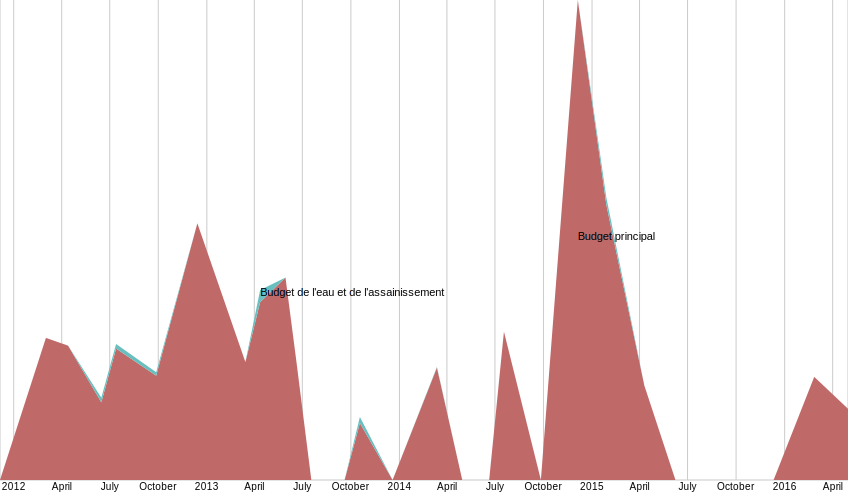
Les dépenses d'urbanisme depuis 2012
Ces graphes montrent les dépenses d'urbanisme regroupés par catégorie. Le graphe de gauche montre la participation en fonds propres à la commune ; celui de droite indique le coût total des travaux, subventions incluses.
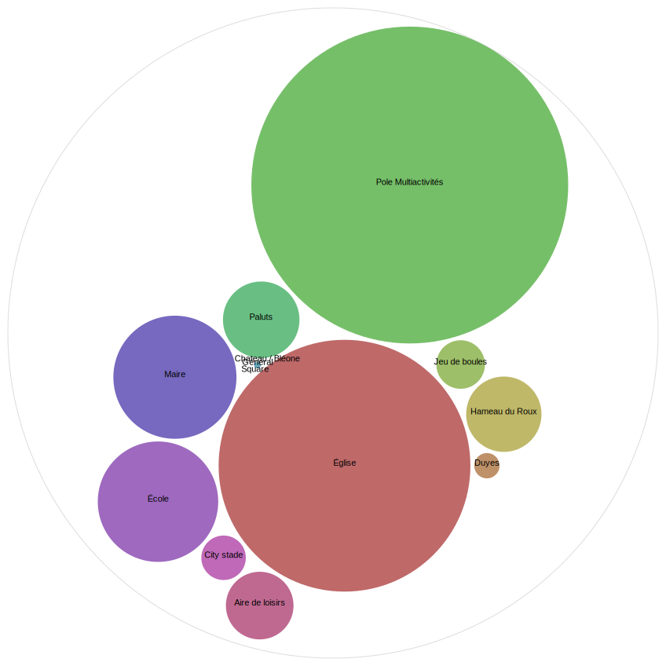
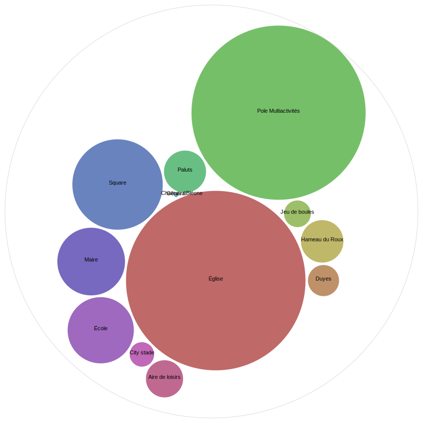
Les mots clés et leur catégorisation
Ce graphe montre les termes les plus utilisés dans les compte-rendus municipaux. Les mots courts (moins de trois lettres, comme "à", "de", "le", etc.) sont exclus, ainsi que le sont les mots qui ont été utilisés moins de 10 fois sur la période d'analyse.
Les mots sont regroupés par thème :
Les mots sont regroupés par thème :
- En vert, les termes relatifs à la procédure et au formalisme ("Monsieur le maire ouvre le conseil municipal..."). Les termes "pour" et "unanimité" sont très utilisés, ce qui semble montrer un conseil municipal peu clivé.
- En rouge, les termes relatifs aux dates
- En bleu, ceux relatifs aux lieux (Aiglun, CCABV...) où l'on voit que Digne-les-Bains n'arrive qu'en sixième position.
- En violet, les noms de personnes
- En vert, les thématiques d'urbanisme
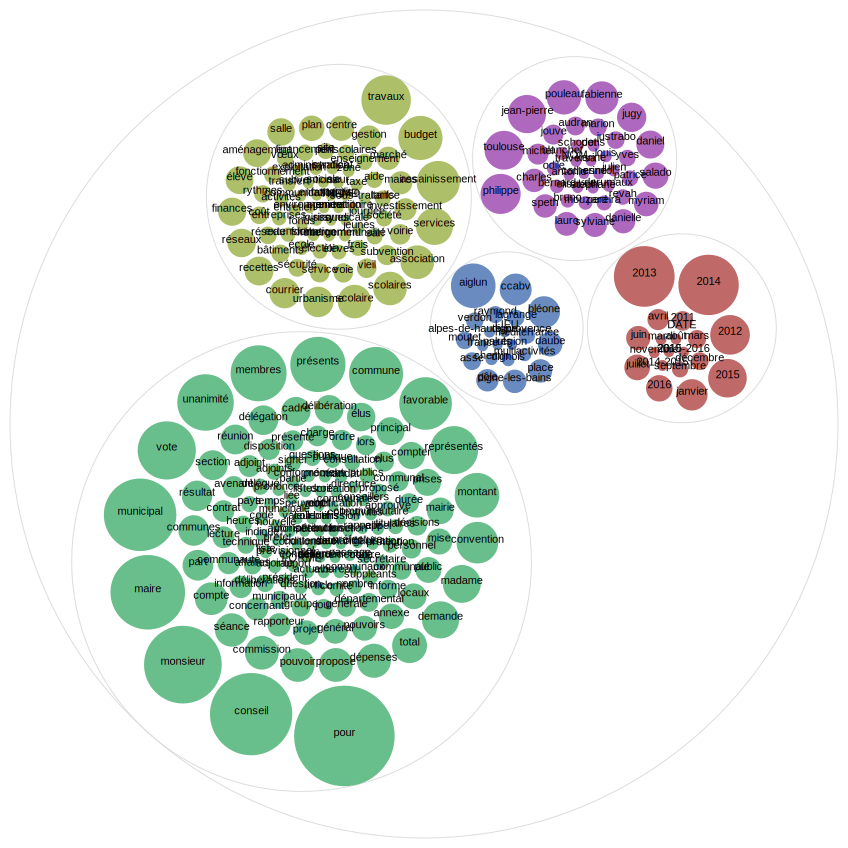
Les catégories dans le temps
Ce graphe montre l'utilisation des thématiques chaque année. Il permet par exemple de voir que l'école a été une préoccupation importante en 2014 et 2015.
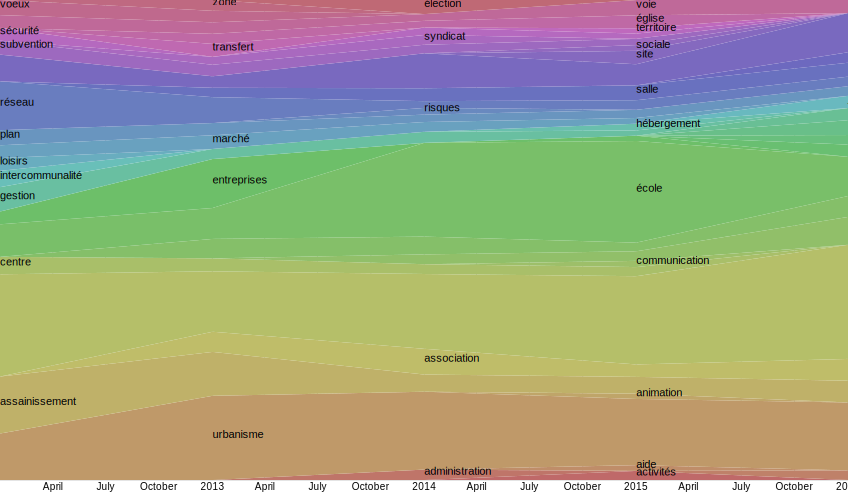